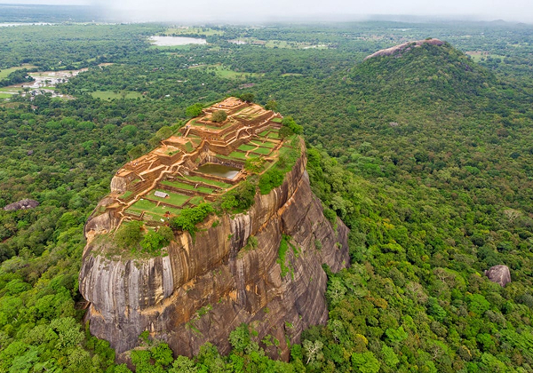
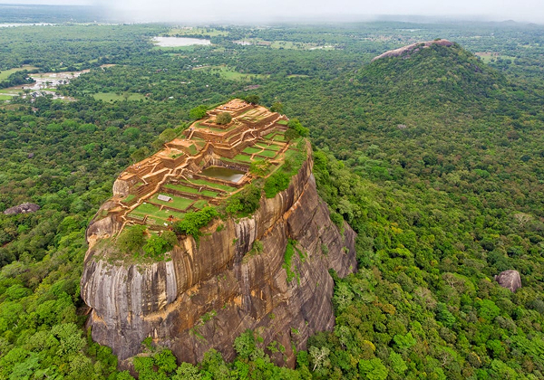
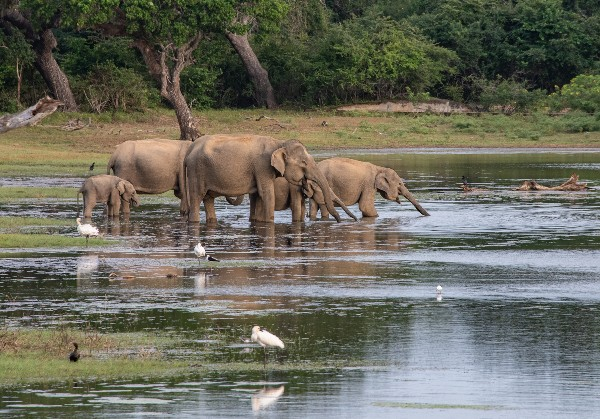
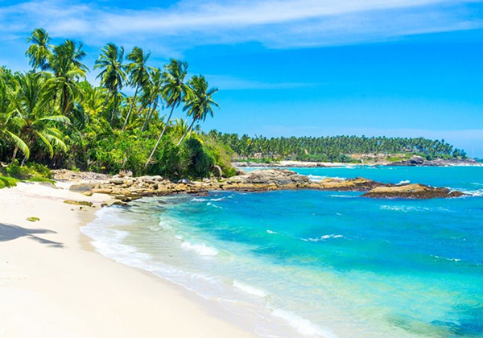
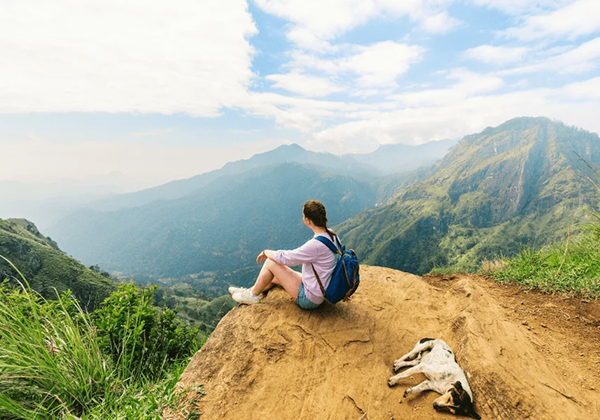
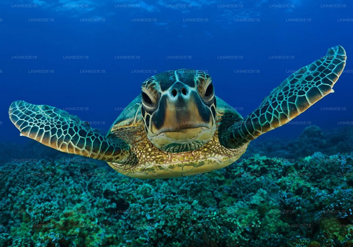
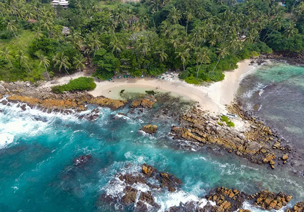

Featured
Sri lanka
Adisham Bungalow or Adisham Hall, being a clear-cut instance of colonial heritage in the country, is a typical English countryside mansion built of stone, built in 1931. Having in possession a relic of St.Sylvester at the chapel, Adisham Bungalow serves as a venerable monastery of Saint Benedict at present. Positioned on the lush mountain ranges of central highlands in the nation, Adisham Bungalow is one of the best tourist attractions in Sr Lanka visited by thousands every year.
 

Sigiriya Lions Rock is a UNESCO World Heritage site located in Sri Lanka. Rising 200 meters above the surrounding jungle, this massive rock fortress was once the royal citadel of King Kashyapa in the 5th century AD. The rock gets its name from a giant lion statue that once stood at the entrance to the summit, where the king’s palace was located. Though only the lion’s paws remain today, they hint at the grandeur of the original structure. The site is famous for its well-preserved frescoes, ancient water gardens, and stunning panoramic views.

Discover the spectacular wilderness of Yala National Park, the core of a contiguous system of nine connected protected areas, and home to much of Sri Lanka’s magnificent wildlife. With Block 1 dating back to 1900, this wildlife sanctuary has grown over the years. Nestled in the south-east corner of Sri Lanka, the park is home to a high concentration of leopards.Yala National Park is home to an extensive variety of 44 varieties of mammal and over 215 bird species. Yala National Park isrenowned for having one of the world's highest concentrations of leopards.

Bentota has various adorable beaches that would amuse you with its picturesque landscapes, perfect for carrying out various fun activities on the water. A plethora of beach resorts, spa centers, dining venues, and fun hubs are served for you on the beach. On the coastal line, you have a turtle hatchery, a water sports center and Moragall beach. In the city region, you have a Japanese style Brief Garden, standalone Cinnamon island, Galapata Vihara the ancient temple, Galle Dutch fort, Madu Ganga river, and Ambalangoda cultural village.

The Little Adam’s Peak Hike was one of the most memorable experiences of my Sri Lanka itinerary. Although it doesn’t require much walking, the panoramic views from the top are absolutely breathtaking. The trailhead is just a short 5-minute tuk-tuk ride or a 20-minute walk from Ella’s city center, making it a convenient stop for anyone exploring the area. The hike takes you through beautiful tea plantations and rolling green hills, offering a peaceful, uncrowded alternative to the more famous Adam’s Peak.

Mahamodara Sea Turtle Hatchery Owing to its tropical location, Sri Lanka is surrounded by waters that teem with vibrant marine life. The sea life found around the island consists of many that are entitled in the list of IUCN as endangered species and turtles rank among the most prominent creatures on this list. All of five sea turtle species such as the Green, Olive Ridley, Loggerhead, Leatherback and Hawksbill turtles can be found in the waters surrounding the island. And all of these turtles occasionally drop by the shores to lay their eggs.

Another beach that I think is one of the most gorgeous in Sri Lanka is “Secret Beach.” Secret Beach was once a beach that very few knew about. However, as soon as tourists discovered how gorgeous this little beach bay was, the word got out. It has since become one of the most popular places to visit in Sri Lanka! Secret Beach is located in Mirissa and can be reached by walking or with a tuk-tuk. Once you arrive at Secret Beach you will see the beautiful ocean and a small calm bay. The little beach is sheltered by rocks making the water calm and perfect for swimming.